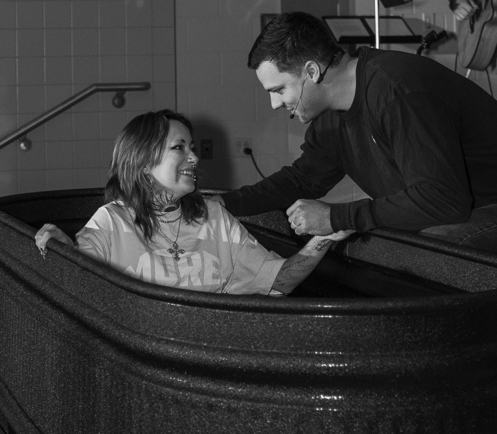
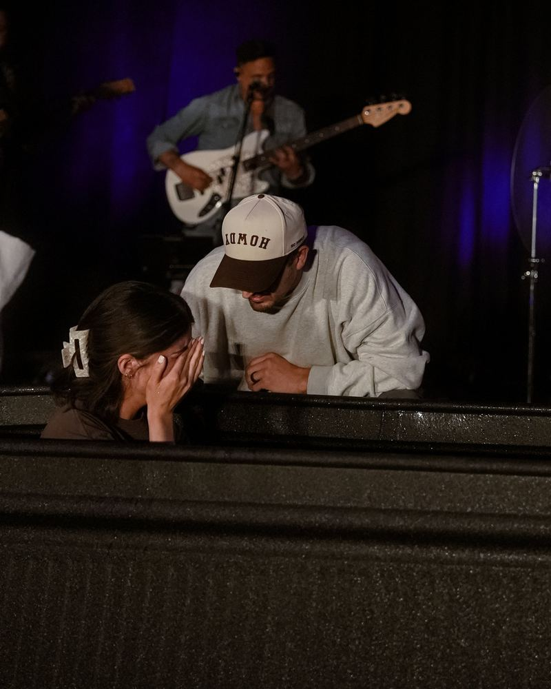
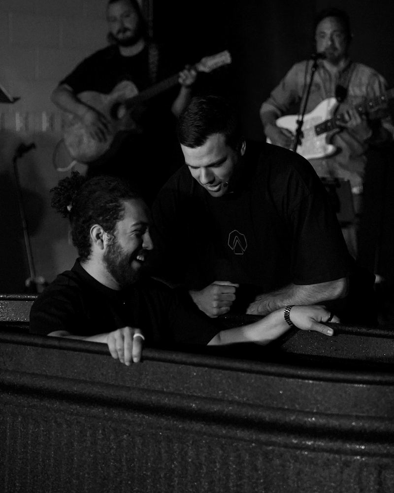
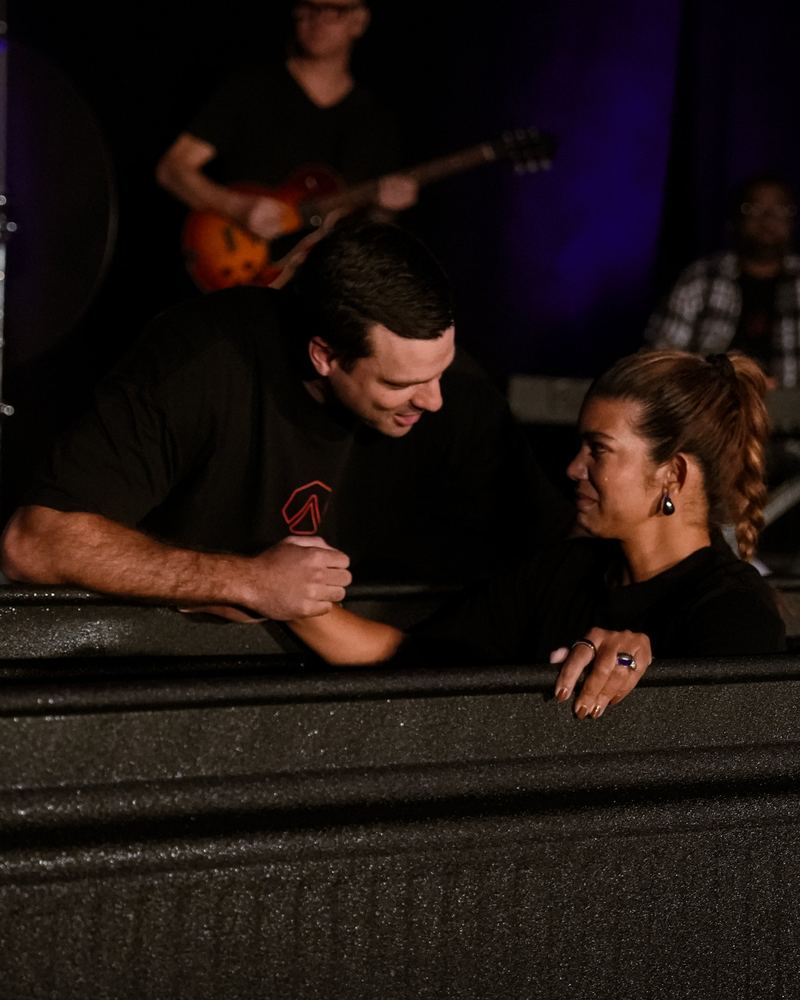
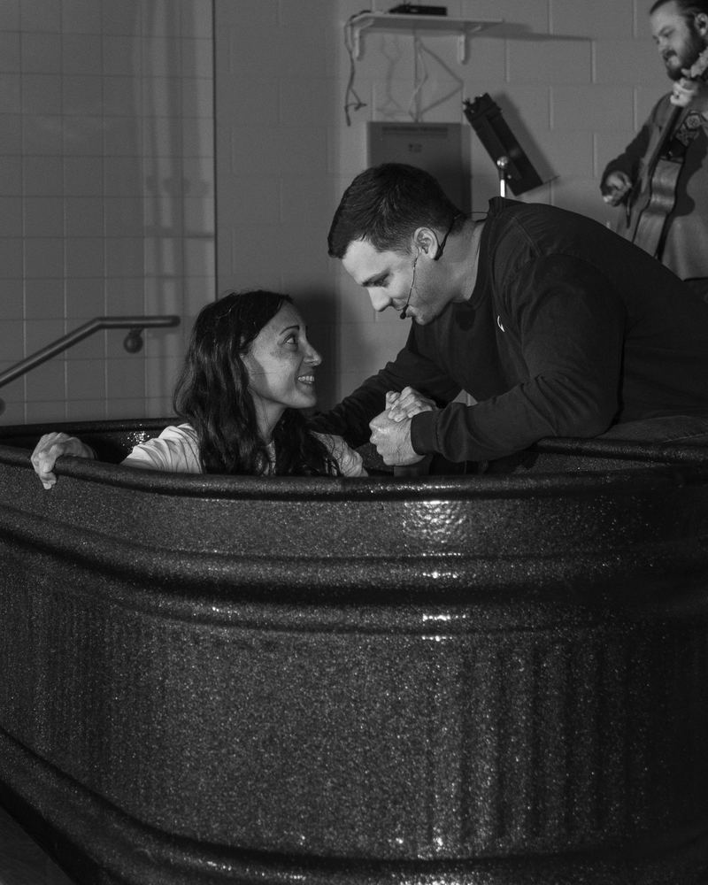
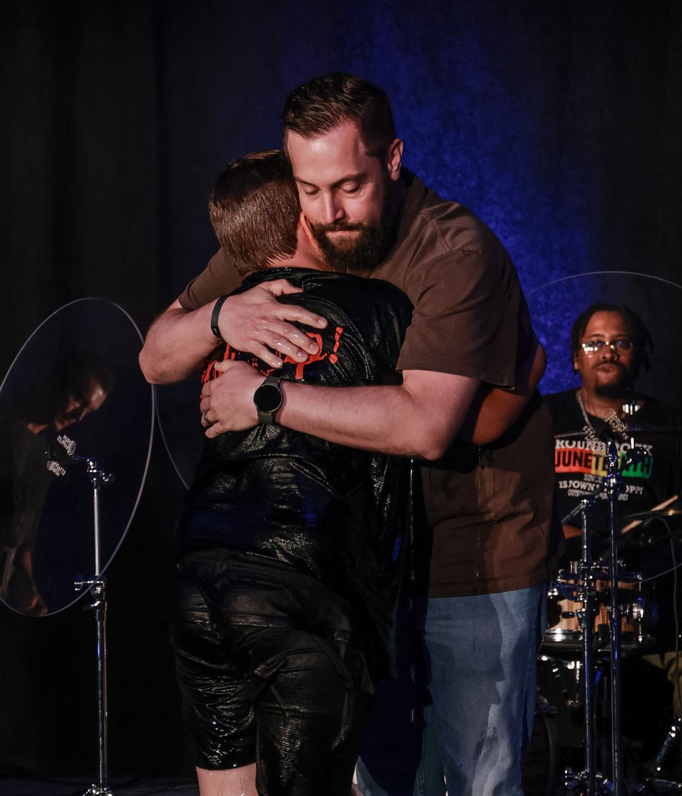

Get baptized
Go public.
Baptism is how you let everyone around you know you’ve decided to follow Jesus.
people got baptized in our first year. You could be next.




How it works
Three steps. The first one takes two minutes.
- 1
Let us know.
Fill out a short form so we know you’re ready.
- 2
We’ll talk.
We reach out, get you a date, and answer anything you’re wondering about. If you’re under 16, we sit down first and hear from you what you believe.
- 3
Get dunked.
Pick who baptizes you, as long as they’ve been baptized themselves. Dads have baptized their kids here. Wives have baptized their husbands. Otherwise one of our pastors will gladly do it.
I have questions.
Why should I get baptized?
Because it is an act of obedience, and Jesus went first. When John tried to talk him out of it, Jesus said it should be done. If the Son of God felt that way about his own baptism, how much more should we?
And some of his last words were a command to go and baptize.
- Matthew 3:13-15
- Matthew 28:19-20
What does it actually mean?
It’s a symbol. Going under the water is a picture of death. The old you dies with Christ. Coming up is new life. The first thing you do when you come out of the water is the first thing a baby does when it’s born. You take a breath.
To be clear: baptism doesn’t save you. Jesus does.
- Romans 6:3-4
- 2 Corinthians 5:17
Why all the way under?
The word baptize means to dunk. Every time the Bible uses it, it is a word for putting something all the way under. Never the word for sprinkling.
And when Jesus was baptized, he went under and came up out of the water. So we do what he did.
- Matthew 3:16
- Acts 8:38
- John 3:23
I was baptized as a baby. Should I do it again?
If your parents had you sprinkled as a baby, that says a lot about how much they wanted this for you. Not everyone gets that.
But that was their decision and their belief, not yours. In the New Testament the pattern is always the same. People hear. People believe. People are baptized. So yes. We would love to baptize you now that the decision is yours.
- Acts 8:12
- Acts 16:30-33
Can my kid get baptized?
Yes, if they are 8 or older and it is their decision. Everyone under 16 has a conversation with us first, because we want to hear from them what they believe.
We don’t baptize babies. Belief comes first.
What do I wear? What do I bring?
Just show up. We have the towels, and we have extra clothes you can wear to get baptized.
Want the long version? Watch the message on baptism →
